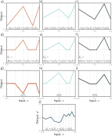
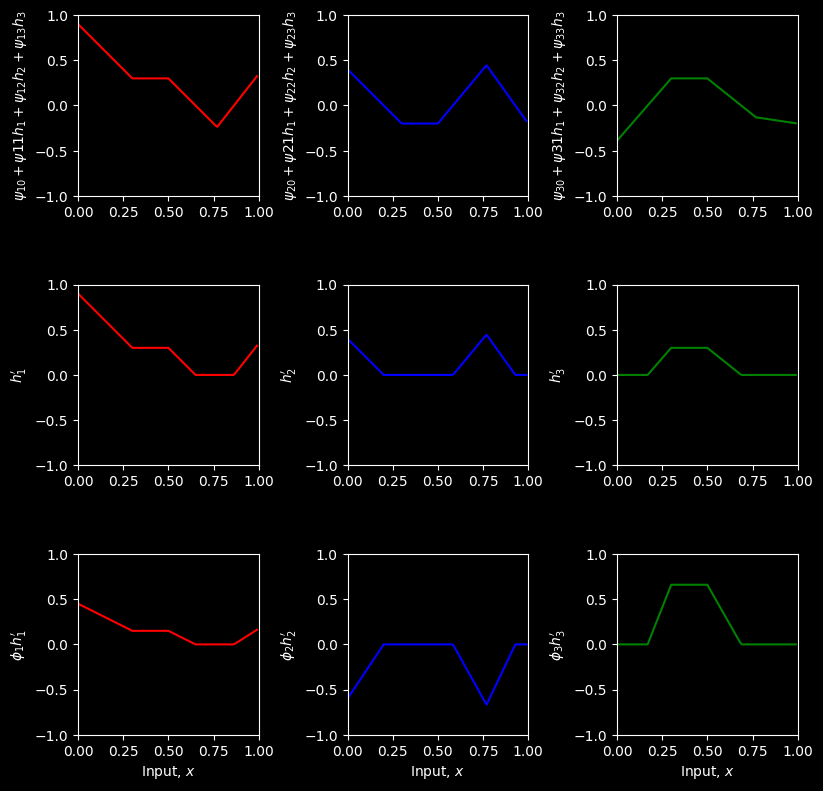
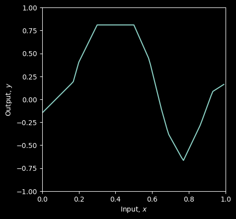
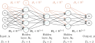

Abc \(\ref{eq:dnn_three_layer_out}\) and \(\ref{fig:dnn_two_layer}\)
Considering these equations leads to another way to think about how the network constructs an increasingly complicated function (figure 4.5):

Computation for the deep network in figure 4.4. a–c) The inputs to the second hidden layer (i.e., the pre-activations) are three piecewise linear functions where the “joints” between the linear regions are at the same places (see figure 3.6). d–f) Each piecewise linear function is clipped to zero by the ReLU activation function. g–i) These clipped functions are then weighted with parameters \(ϕ′_1\), \(ϕ′_2\), and \(ϕ′_3\), respectively. j) Finally, the clipped and weighted functions are summed and an offset \(ϕ′_0\) that controls the overall height is added. (Interactive figure)
The three hidden units \(h_1\), \(h_2\), and \(h_3\) in the first layer are computed as usual by forming linear functions of the input and passing these through ReLU activation functions.
The pre-activations at the second layer are computed by taking three new linear functions of these hidden units (arguments of the activation functions in equation 4.8). At this point, we effectively have a shallow network with three outputs; we have computed three piecewise linear functions with the “joints” between linear regions in the same places (see figure 3.6).
At the second hidden layer, another ReLU function a[•] is applied to each function (equation 4.8), which clips them and adds new “joints” to each.
The final output is a linear combination of these hidden units (equation 4.9).
In conclusion, we can either think of each layer as “folding” the input space or as creating new functions, which are clipped (creating new regions) and then recombined.
The former view emphasizes the dependencies in the output function but not how clipping creates new joints, and the latter has the opposite emphasis.
Ultimately, both descriptions provide only partial insight into how deep neural networks operate. Regardless, it’s important not to lose sight of the fact that this is still merely an equation relating input x to output y′. Indeed, we can combine equations 4.7–4.9 to get one expression:
although this is admittedly rather difficult to understand.
# Imports math libraryimport numpy as np# Imports plotting libraryimport matplotlib.pyplot as pltplt.style.use('dark_background')theta = np.zeros([4,2])theta[1,0] =0.3; theta[1,1] =-1.0theta[2,0] =-1.0; theta[2,1] =2.0theta[3,0] =-0.5; theta[3,1] =0.65psi = np.zeros([4,4])psi[1,0] =0.3; psi[1,1] =2.0; psi[1,2] =-1.0; psi[1,3]=7.0psi[2,0] =-0.2; psi[2,1] =2.0; psi[2,2] =1.2; psi[2,3]=-8.0psi[3,0] =0.3; psi[3,1] =-2.3; psi[3,2] =-0.8; psi[3,3]=2.0phi = np.zeros([4,1])phi[0] =0.0; phi[1] =0.5; phi[2] =-1.5; phi [3] =2.2# Define the Rectified Linear Unit (ReLU) functiondef ReLU(preactivation): activation = preactivation.clip(0.0)return activation# Define a deep neural network with, one input, one output, two hidden layers and three hidden units (eqns 4.7-4.9)# To make this easier, we store the parameters in ndarrays, so phi_0 = phi[0] and psi_3,3 = psi[3,3] etc.def shallow_1_1_3_3(x, activation_fn, phi, psi, theta):# Preactivations at layer 1 layer1_pre_1 = theta[1][0] + theta[1][1]*x ; layer1_pre_2 = theta[2][0] + theta[2][1]*x ; layer1_pre_3 = theta[3][0] + theta[3][1]*x ;# Activation functions h1 = activation_fn(layer1_pre_1) h2 = activation_fn(layer1_pre_2) h3 = activation_fn(layer1_pre_3)# Preactivations at layer 2 layer2_pre_1 = psi[1][0] + psi[1][1]*h1 + psi[1][2]*h2 + psi[1][3]*h3 ; layer2_pre_2 = psi[2][0] + psi[2][1]*h1 + psi[2][2]*h2 + psi[2][3]*h3 ; layer2_pre_3 = psi[3][0] + psi[3][1]*h1 + psi[3][2]*h2 + psi[3][3]*h3 ;# Activation functions h1_prime = activation_fn(layer2_pre_1) h2_prime = activation_fn(layer2_pre_2) h3_prime = activation_fn(layer2_pre_3)# Weighted outputs by phi phi1_h1_prime = phi[1]*h1_prime ; phi2_h2_prime = phi[2]*h2_prime ; phi3_h3_prime = phi[3]*h3_prime ;# Combine weighted activation and add y offset (summing terms of equation 4.9) y = phi[0] + phi1_h1_prime + phi2_h2_prime + phi3_h3_prime ;# Return everything we have calculatedreturn y, layer2_pre_1, layer2_pre_2, layer2_pre_3, h1_prime, h2_prime, h3_prime, phi1_h1_prime, phi2_h2_prime, phi3_h3_prime# # Plot two layer neural network as in figure 4.5def plot_neural_two_layers(x, y, layer2_pre_1, layer2_pre_2, layer2_pre_3, h1_prime, h2_prime, h3_prime, phi1_h1_prime, phi2_h2_prime, phi3_h3_prime): fig, ax = plt.subplots(3,3) fig.set_size_inches(8.5, 8.5) fig.tight_layout(pad=3.0) ax[0,0].plot(x,layer2_pre_1,'r-'); ax[0,0].set_ylabel(r'$\psi_{10} + \psi{11}h_1 + \psi_{12}h_2 + \psi_{13}h_3$') ax[0,1].plot(x,layer2_pre_2,'b-'); ax[0,1].set_ylabel(r'$\psi_{20} + \psi{21}h_1 + \psi_{22}h_2 + \psi_{23}h_3$') ax[0,2].plot(x,layer2_pre_3,'g-'); ax[0,2].set_ylabel(r'$\psi_{30} + \psi{31}h_1 + \psi_{32}h_2 + \psi_{33}h_3$') ax[1,0].plot(x,h1_prime,'r-'); ax[1,0].set_ylabel(r"$h^{\prime}_1$") ax[1,1].plot(x,h2_prime,'b-'); ax[1,1].set_ylabel(r"$h^{\prime}_2$") ax[1,2].plot(x,h3_prime,'g-'); ax[1,2].set_ylabel(r"$h^{\prime}_3$") ax[2,0].plot(x,phi1_h1_prime,'r-'); ax[2,0].set_ylabel(r"$\phi_1 h^{\prime}_1$") ax[2,1].plot(x,phi2_h2_prime,'b-'); ax[2,1].set_ylabel(r"$\phi_2 h^{\prime}_2$") ax[2,2].plot(x,phi3_h3_prime,'g-'); ax[2,2].set_ylabel(r"$\phi_3 h^{\prime}_3$")for plot_y inrange(3):for plot_x inrange(3): ax[plot_y,plot_x].set_xlim([0,1]);ax[plot_x,plot_y].set_ylim([-1,1]) ax[plot_y,plot_x].set_aspect(0.5) ax[2,plot_y].set_xlabel(r'Input, $x$'); plt.show() fig, ax = plt.subplots() ax.plot(x,y) ax.set_xlabel(r'Input, $x$'); ax.set_ylabel(r'Output, $y$') ax.set_xlim([0,1]);ax.set_ylim([-1,1]) ax.set_aspect(0.5) plt.show()# Define parameters (note first dimension of theta and psi is padded to make indices match# notation in book)# Define a range of input valuesx = np.arange(0,1,0.01)# Run the neural networky, layer2_pre_1, layer2_pre_2, layer2_pre_3, h1_prime, h2_prime, h3_prime, phi1_h1_prime, phi2_h2_prime, phi3_h3_prime \= shallow_1_1_3_3(x, ReLU, phi, psi, theta)# And then plot itplot_neural_two_layers(x, y, layer2_pre_1, layer2_pre_2, layer2_pre_3, h1_prime, h2_prime, h3_prime, phi1_h1_prime, phi2_h2_prime, phi3_h3_prime)


We can extend the deep network construction to more than two hidden layers; modern networks might have more than a hundred layers with thousands of hidden units at each layer.
The number of hidden units in each layer is referred to as the width of the network, and the number of hidden layers as the depth.
The total number of hidden units is a measure of the network’s capacity.
We denote the number of layers as \(K\) and the number of hidden units in each layer as \(D_1, D_2, \ldots, D_K\).
These are examples of hyperparameters. They are quantities chosen before we learn the model parameters (i.e., the slope and intercept terms).
For fixed hyperparameters (e.g., \(K = 2\) layers with \(D_k = 3\) hidden units in each), the model describes a family of functions, and the parameters determine the particular function. Hence, when we also consider the hyperparameters, we can think of neural networks as representing a family of families of functions relating input to output.
We have seen that a deep neural network consists of linear transformations alternating with activation functions. We could equivalently describe equations 4.7–4.9 in matrix notation as:
where, in each case, the function a[•] applies the activation function separately to every element of its vector input.

Matrix notation for network with Di = 3-dimensional input x, Do = 2- dimensional output y, and K = 3 hidden layers h1, h2, and h3 of dimensions \(D_1\) = 4, \(D_2\) = 2, and \(D_3\) = 3 respectively. The weights are stored in matrices \(\Omega_k\) that multiply the activations from the preceding layer to create the pre-activations at the subsequent layer. For example, the weight matrix \(\Omega_1\) that computes the pre-activations at \(h_2\) from the activations at \(h_1\) has dimension 2×4. It is applied to the four hidden units in layer one and creates the inputs to the two hidden units at layer two. The biases are stored in vectors \(\beta_k\) and have the dimension of the layer into which they feed. For example, the bias vector \(\beta_2\) is length three because layer \(h_3\) contains three hidden units.
This notation becomes cumbersome for networks with many layers. Hence, from now on, we will describe the vector of hidden units at layer k as hk , the vector of biases (intercepts) that contribute to hidden layer k+ 1 as βk , and the weights (slopes) that are applied to the kth layer and contribute to the (k+1)th layer as Ωk . A general deep network y= f[x,ϕ] with K layers can now be written as:
The parameters ϕof this model comprise all of these weight matrices and bias vectors \(\phi = \{\beta_k ,\Omega_k \}_{k=0}^{K}\) . If the kth layer has \(D_k\) hidden units, then the bias vector \(\beta_k−1\) will be of size \(D_k\). The last bias vector \(\beta_K\) has the size \(D_o\) of the output. The first weight matrix \(\Omega_0\) has size \(D_1 \times D_i\) where \(D_i\) is the size of the input. The last weight matrix \(\Omega_K\) is \(D_o \times D_K\), and the remaining matrices \(\Omega_k\) are \(D_{k+1} \times D_k\) (figure 4.6). We can equivalently write the network as a single function: